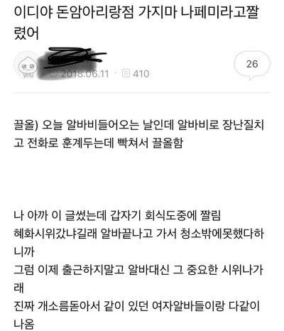

개요
커피 프랜차이즈점 이디야 돈암아리랑점이 혜화역에서 열린 불편한 용기 시위에 참석하였음을 이유로 아르바이트생을 해고한 사건이다.
발단
2018년 6월 11일, 피해자는 혜화시위를 이유로 부당해고 되었음을 밝혔다.

해당 사건은 트위터에 빠르게 전파되었다. 트위터 이용자들은 해시태그 #이디야_불매 로 사건을 전파하고 이디야 트위터 공식 계정(@EDIYA_COFFEE) 및 이디야 웹사이트 고객의 소리 코너를 통해 민원하였다.
이디야 돈암아리랑점에서 근무하던 제 지인이 혜화역 시위를 다녀왔단 이유로 부당해고 당했습니다. 본사는 2018년에 이런 일이 가능하다고 보십니까? - 고자이너6B(@Designergoja)1
경과
- 2018년 6월 12일, 이디야 커피 측은 입장문을 게재하였다. 그러나 '피해자가 공론화를 원하지 않는다' '타 가맹점에 선의의 피해를 주지 않도록 확대재생산을 막아달라'는 표현 등이 거센 반발을 불러 일으켰다.2
- 2018년 6월 13일, 이디야 커피 본사 관계자는 해당 건이 정당한 해고사유가 아니라고 판단했다고 밝혔다.3
- 2018년 6월 14일 이디야는 입장문을 통해, 자체 조사 결과 피해자가 점주의 사과를 받아들였고 점주는 '다양한 가치관 존중과 노무 준수사항'에 대한 교육을 받을 예정이라 밝혔다.4
여담
- 수달 후, 비슷한 맥락의 요거프레소 부당 해고 사건이 일어났다. 2018년 11월 10일, 천안의 모 요거프레소 가맹점에서 탈코르셋을 이유로 여성 아르바이트 직원을 해고해 논란에 휩싸인 사건이다. 요거프레소는 11월 13일 본사 차원의 사과와 재발방지 대책을 내놓았다.